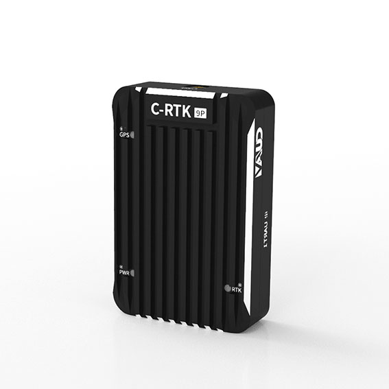
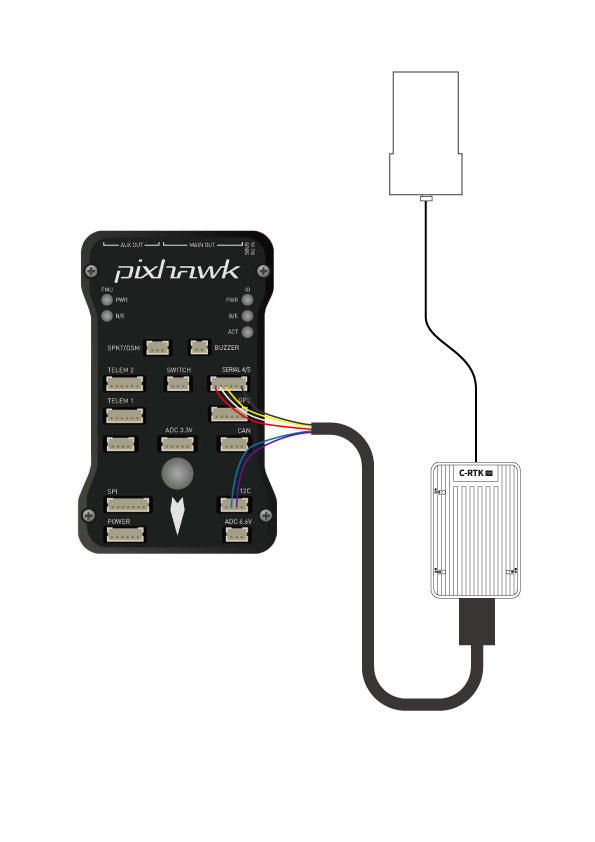
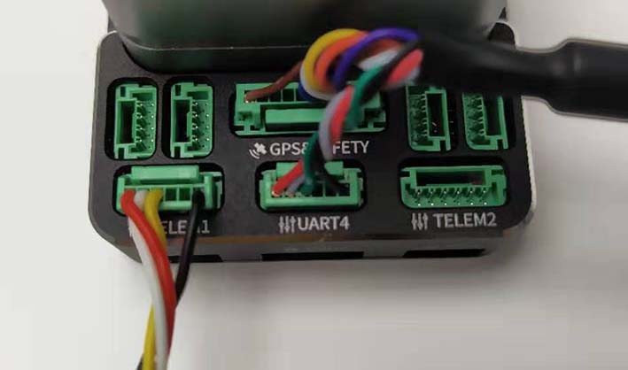
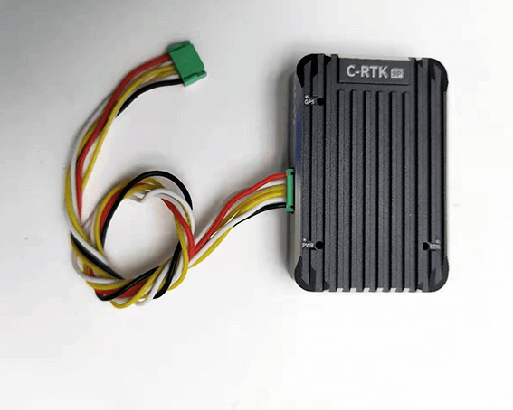
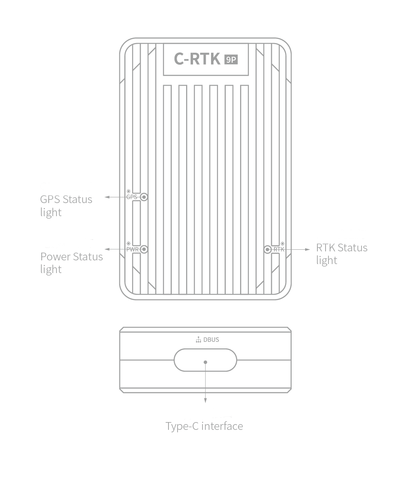
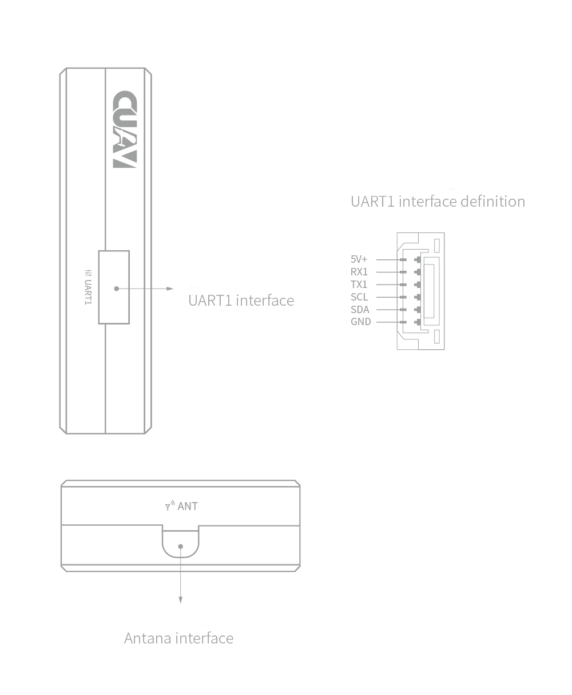

CUAV C-RTK 9P GPS¶
This article mainly introduces C-RTK 9P based on Ublox F9P. The C-RTK 9P offers more accurate positional accuracy and shorter convergence times than the Ublox M8P module. This description uses the Mission Planner for setup, but you can also use QgroundControl.
{kind=link}
Note
ArduPilot does not currently configure UBlox F9P GPS constellations. User must assure that the GPS is properly configured for his region and application. See U-Blox F9P Firmware Update
Key Features¶
RTK Receiver: Ublox F9P
Compass : IST8310
GNSS
GPS / QZSS,Beidou,Galileo, GLONASS
GNSS Bands
GPS L1C/A L2C, GLONASS L1OF L2OF, GALILEO E1B/C E5b, BDS B1I B2I, QZSS L1C/A L2C
Nav. update rate
RTK Up to 20HZ
Position accuracy
RTK 0.01 m + 1 ppm CEP
Convergence time
RTK < 10 sec
Acquisition
Cold starts 24 s
Aided starts 2 s
Reacquisition 2 s
Sensitivity
Tracking & Nav -167 dBm
Cold starts -148 dBm
Hot starts -157 dBm
Reacquisition -160 dBm
Anti-jamming
Active CW detection and removal Onboard band pass flter
Anti-spoofng
Advanced anti-spoofng algorithms
Interfaces
2 UART
1 USB
1 I2C
1 Antenna interface(MMCX)
Protocols
NMEA
UBX binary
RTCM version 3.x
Supply voltage
–40 °C to +85 °C
Size - 31.5*48*12MM - weight:21g
Where to buy¶
You can buy it from CUAV store.
Connect to Pixhawk¶
{kind=link}
Connect to CUAV V5+ Or V5 nano¶
{kind=link}
Note
Please use V5+ or V5 nano special cable,10 pin connector plugged into GPS&SAFETY PORT, 6 pin connector plugged into UART 4.
Connect to Others¶
{kind=link}
Note
If you use a different autopilot, please select the V5+ version kit, which contains a 6 pin to 6pin cable that you can connect to the flight control GPS/GPS2/UART4 interface (it can be connected to Pixhawk2.1, Pixhawk 3 pro, etc).
Port and LED¶
{kind=link}
LED status:
RTK status: solid (rtk fixed), Blinking (receiving and using RTCM corrections), off (otherwise).
GPS status:solid(no fix),Blinking(GPS FIX).
PWR status:solid(power input),off( not power input or vcc is not healthy).
{kind=link}